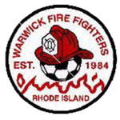
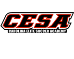
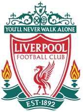

My favorite hobby is playing soccer. I have been playing soccer since I was two years old. My dad is from Liverpool, England so he really likes soccer, and he introduced it to me. I started playing on a team when I was three years old. It was indoor soccer.
When I was younger, I played for Warwick Firefighters Soccer Club in Rhode Island. I would play outdoors in the spring and fall, and I would play indoors during the cold winter months. I was part of the Class A travel team and I was really good during my elementary school years. I always liked the outdoor soccer season more than indoor. I also started to learn how to juggle the ball, and I became very good at it.
I now live in South Carolina and play at CESA . My dad was my coach at first, and and my team was normally pretty good. We won a tournament once and that was really cool. Now I'm still playing academy, and I'm starting the fall season with my team. My coach is also the soccer coach at Spartanburg Methodist.
I also play soccer for J L Mann . Their team is really good. It is the hardest I have ever been pushed on a team, and the conditioning we did pushed me to the limits. The coaches are really good, and they expect high level performances every game. Mann varsity won the state championship two years ago. The past two years I have been on JV, but this year I'm trying out for varsity.
Watching soccer is also enjoyable too. My favorite professional team is Liverpool , and they play in the English Premier League. They have a very successful history, but their past few seasons have been mediocre. Every weekend I watch Premier League games, and every week there is something entertaining. I like Liverpool because that is where my dad grew up, and they are who he supported. Hopefully they will do well this season.
By: Nick P